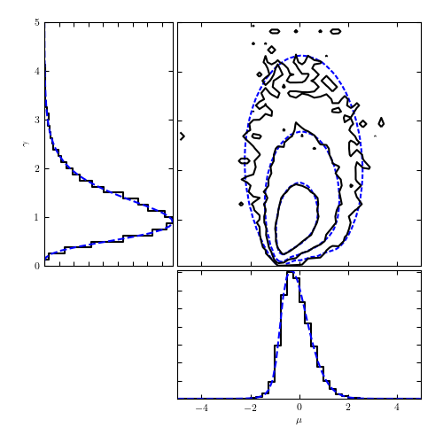

MCMC for the Cauchy distribution¶
This example shows how to use pyMC to sample the likelihood for the parameters of a Cauchy distribution
[2K
[ 0% ][2K
[ 0% ] 100 of 50000 complete[2K
[ 0% ] 200 of 50000 complete[2K
[ 1% ] 300 of 50000 complete[2K
[ 1% ] 400 of 50000 complete[2K
[ 1% ] 500 of 50000 complete[2K
[ 1% ] 600 of 50000 complete[2K
[ 1% ] 700 of 50000 complete[2K
[* 2% ] 800 of 50000 complete[2K
[* 2% ] 900 of 50000 complete[2K
[* 2% ] 1000 of 50000 complete[2K
[* 2% ] 1100 of 50000 complete[2K
[* 2% ] 1200 of 50000 complete[2K
[* 3% ] 1300 of 50000 complete[2K
[* 3% ] 1400 of 50000 complete[2K
[* 3% ] 1500 of 50000 complete[2K
[* 3% ] 1600 of 50000 complete[2K
[* 3% ] 1700 of 50000 complete[2K
[** 4% ] 1800 of 50000 complete[2K
[** 4% ] 1900 of 50000 complete[2K
[** 4% ] 2000 of 50000 complete[2K
[** 4% ] 2100 of 50000 complete[2K
[** 4% ] 2200 of 50000 complete[2K
[** 5% ] 2300 of 50000 complete[2K
[** 5% ] 2400 of 50000 complete[2K
[** 5% ] 2500 of 50000 complete[2K
[** 5% ] 2600 of 50000 complete[2K
[** 5% ] 2700 of 50000 complete[2K
[** 6% ] 2800 of 50000 complete[2K
[** 6% ] 2900 of 50000 complete[2K
[** 6% ] 3000 of 50000 complete[2K
[** 6% ] 3100 of 50000 complete[2K
[** 6% ] 3200 of 50000 complete[2K
[*** 7% ] 3300 of 50000 complete[2K
[*** 7% ] 3400 of 50000 complete[2K
[*** 7% ] 3500 of 50000 complete[2K
[*** 7% ] 3600 of 50000 complete[2K
[*** 7% ] 3700 of 50000 complete[2K
[*** 8% ] 3800 of 50000 complete[2K
[*** 8% ] 3900 of 50000 complete[2K
[*** 8% ] 4000 of 50000 complete[2K
[*** 8% ] 4100 of 50000 complete[2K
[*** 8% ] 4200 of 50000 complete[2K
[*** 9% ] 4300 of 50000 complete[2K
[*** 9% ] 4400 of 50000 complete[2K
[*** 9% ] 4500 of 50000 complete[2K
[*** 9% ] 4600 of 50000 complete[2K
[*** 9% ] 4700 of 50000 complete[2K
[**** 10% ] 4800 of 50000 complete[2K
[**** 10% ] 4900 of 50000 complete[2K
[**** 10% ] 5000 of 50000 complete[2K
[**** 10% ] 5100 of 50000 complete[2K
[**** 10% ] 5200 of 50000 complete[2K
[**** 11% ] 5300 of 50000 complete[2K
[**** 11% ] 5400 of 50000 complete[2K
[**** 11% ] 5500 of 50000 complete[2K
[**** 11% ] 5600 of 50000 complete[2K
[**** 11% ] 5700 of 50000 complete[2K
[***** 12% ] 5800 of 50000 complete[2K
[***** 12% ] 5900 of 50000 complete[2K
[***** 12% ] 6000 of 50000 complete[2K
[***** 12% ] 6100 of 50000 complete[2K
[***** 12% ] 6200 of 50000 complete[2K
[***** 13% ] 6300 of 50000 complete[2K
[***** 13% ] 6400 of 50000 complete[2K
[***** 13% ] 6500 of 50000 complete[2K
[***** 13% ] 6600 of 50000 complete[2K
[***** 13% ] 6700 of 50000 complete[2K
[***** 14% ] 6800 of 50000 complete[2K
[***** 14% ] 6900 of 50000 complete[2K
[***** 14% ] 7000 of 50000 complete[2K
[***** 14% ] 7100 of 50000 complete[2K
[***** 14% ] 7200 of 50000 complete[2K
[****** 15% ] 7300 of 50000 complete[2K
[****** 15% ] 7400 of 50000 complete[2K
[****** 15% ] 7500 of 50000 complete[2K
[****** 15% ] 7600 of 50000 complete[2K
[****** 15% ] 7700 of 50000 complete[2K
[****** 16% ] 7800 of 50000 complete[2K
[****** 16% ] 7900 of 50000 complete[2K
[****** 16% ] 8000 of 50000 complete[2K
[****** 16% ] 8100 of 50000 complete[2K
[****** 16% ] 8200 of 50000 complete[2K
[****** 17% ] 8300 of 50000 complete[2K
[****** 17% ] 8400 of 50000 complete[2K
[****** 17% ] 8500 of 50000 complete[2K
[****** 17% ] 8600 of 50000 complete[2K
[****** 17% ] 8700 of 50000 complete[2K
[******* 18% ] 8800 of 50000 complete[2K
[******* 18% ] 8900 of 50000 complete[2K
[******* 18% ] 9000 of 50000 complete[2K
[******* 18% ] 9100 of 50000 complete[2K
[******* 18% ] 9200 of 50000 complete[2K
[******* 19% ] 9300 of 50000 complete[2K
[******* 19% ] 9400 of 50000 complete[2K
[******* 19% ] 9500 of 50000 complete[2K
[******* 19% ] 9600 of 50000 complete[2K
[******* 19% ] 9700 of 50000 complete[2K
[******** 20% ] 9800 of 50000 complete[2K
[******** 20% ] 9900 of 50000 complete[2K
[******** 20% ] 10000 of 50000 complete[2K
[******** 20% ] 10100 of 50000 complete[2K
[******** 20% ] 10200 of 50000 complete[2K
[******** 21% ] 10300 of 50000 complete[2K
[******** 21% ] 10400 of 50000 complete[2K
[******** 21% ] 10500 of 50000 complete[2K
[******** 21% ] 10600 of 50000 complete[2K
[******** 21% ] 10700 of 50000 complete[2K
[******** 22% ] 10800 of 50000 complete[2K
[******** 22% ] 10900 of 50000 complete[2K
[******** 22% ] 11000 of 50000 complete[2K
[******** 22% ] 11100 of 50000 complete[2K
[******** 22% ] 11200 of 50000 complete[2K
[********* 23% ] 11300 of 50000 complete[2K
[********* 23% ] 11400 of 50000 complete[2K
[********* 23% ] 11500 of 50000 complete[2K
[********* 23% ] 11600 of 50000 complete[2K
[********* 23% ] 11700 of 50000 complete[2K
[********* 24% ] 11800 of 50000 complete[2K
[********* 24% ] 11900 of 50000 complete[2K
[********* 24% ] 12000 of 50000 complete[2K
[********* 24% ] 12100 of 50000 complete[2K
[********* 24% ] 12200 of 50000 complete[2K
[********** 25% ] 12300 of 50000 complete[2K
[********** 25% ] 12400 of 50000 complete[2K
[********** 25% ] 12500 of 50000 complete[2K
[********** 25% ] 12600 of 50000 complete[2K
[********** 25% ] 12700 of 50000 complete[2K
[********** 26% ] 12800 of 50000 complete[2K
[********** 26% ] 12900 of 50000 complete[2K
[********** 26% ] 13000 of 50000 complete[2K
[********** 26% ] 13100 of 50000 complete[2K
[********** 26% ] 13200 of 50000 complete[2K
[********** 27% ] 13300 of 50000 complete[2K
[********** 27% ] 13400 of 50000 complete[2K
[********** 27% ] 13500 of 50000 complete[2K
[********** 27% ] 13600 of 50000 complete[2K
[********** 27% ] 13700 of 50000 complete[2K
[*********** 28% ] 13800 of 50000 complete[2K
[*********** 28% ] 13900 of 50000 complete[2K
[*********** 28% ] 14000 of 50000 complete[2K
[*********** 28% ] 14100 of 50000 complete[2K
[*********** 28% ] 14200 of 50000 complete[2K
[*********** 29% ] 14300 of 50000 complete[2K
[*********** 29% ] 14400 of 50000 complete[2K
[*********** 29% ] 14500 of 50000 complete[2K
[*********** 29% ] 14600 of 50000 complete[2K
[*********** 29% ] 14700 of 50000 complete[2K
[*********** 30% ] 14800 of 50000 complete[2K
[*********** 30% ] 14900 of 50000 complete[2K
[*********** 30% ] 15000 of 50000 complete[2K
[*********** 30% ] 15100 of 50000 complete[2K
[*********** 30% ] 15200 of 50000 complete[2K
[************ 31% ] 15300 of 50000 complete[2K
[************ 31% ] 15400 of 50000 complete[2K
[************ 31% ] 15500 of 50000 complete[2K
[************ 31% ] 15600 of 50000 complete[2K
[************ 31% ] 15700 of 50000 complete[2K
[************ 32% ] 15800 of 50000 complete[2K
[************ 32% ] 15900 of 50000 complete[2K
[************ 32% ] 16000 of 50000 complete[2K
[************ 32% ] 16100 of 50000 complete[2K
[************ 32% ] 16200 of 50000 complete[2K
[************* 33% ] 16300 of 50000 complete[2K
[************* 33% ] 16400 of 50000 complete[2K
[************* 33% ] 16500 of 50000 complete[2K
[************* 33% ] 16600 of 50000 complete[2K
[************* 33% ] 16700 of 50000 complete[2K
[************* 34% ] 16800 of 50000 complete[2K
[************* 34% ] 16900 of 50000 complete[2K
[************* 34% ] 17000 of 50000 complete[2K
[************* 34% ] 17100 of 50000 complete[2K
[************* 34% ] 17200 of 50000 complete[2K
[************* 35% ] 17300 of 50000 complete[2K
[************* 35% ] 17400 of 50000 complete[2K
[************* 35% ] 17500 of 50000 complete[2K
[************* 35% ] 17600 of 50000 complete[2K
[************* 35% ] 17700 of 50000 complete[2K
[************** 36% ] 17800 of 50000 complete[2K
[************** 36% ] 17900 of 50000 complete[2K
[************** 36% ] 18000 of 50000 complete[2K
[************** 36% ] 18100 of 50000 complete[2K
[************** 36% ] 18200 of 50000 complete[2K
[************** 37% ] 18300 of 50000 complete[2K
[************** 37% ] 18400 of 50000 complete[2K
[************** 37% ] 18500 of 50000 complete[2K
[************** 37% ] 18600 of 50000 complete[2K
[************** 37% ] 18700 of 50000 complete[2K
[************** 38% ] 18800 of 50000 complete[2K
[************** 38% ] 18900 of 50000 complete[2K
[************** 38% ] 19000 of 50000 complete[2K
[************** 38% ] 19100 of 50000 complete[2K
[************** 38% ] 19200 of 50000 complete[2K
[*************** 39% ] 19300 of 50000 complete[2K
[*************** 39% ] 19400 of 50000 complete[2K
[*************** 39% ] 19500 of 50000 complete[2K
[*************** 39% ] 19600 of 50000 complete[2K
[*************** 39% ] 19700 of 50000 complete[2K
[*************** 40% ] 19800 of 50000 complete[2K
[*************** 40% ] 19900 of 50000 complete[2K
[*************** 40% ] 20000 of 50000 complete[2K
[*************** 40% ] 20100 of 50000 complete[2K
[*************** 40% ] 20200 of 50000 complete[2K
[**************** 41% ] 20300 of 50000 complete[2K
[**************** 41% ] 20400 of 50000 complete[2K
[**************** 41% ] 20500 of 50000 complete[2K
[**************** 41% ] 20600 of 50000 complete[2K
[**************** 41% ] 20700 of 50000 complete[2K
[**************** 42% ] 20800 of 50000 complete[2K
[**************** 42% ] 20900 of 50000 complete[2K
[**************** 42% ] 21000 of 50000 complete[2K
[**************** 42% ] 21100 of 50000 complete[2K
[**************** 42% ] 21200 of 50000 complete[2K
[**************** 43% ] 21300 of 50000 complete[2K
[**************** 43% ] 21400 of 50000 complete[2K
[**************** 43% ] 21500 of 50000 complete[2K
[**************** 43% ] 21600 of 50000 complete[2K
[**************** 43% ] 21700 of 50000 complete[2K
[*****************44% ] 21800 of 50000 complete[2K
[*****************44% ] 21900 of 50000 complete[2K
[*****************44% ] 22000 of 50000 complete[2K
[*****************44% ] 22100 of 50000 complete[2K
[*****************44% ] 22200 of 50000 complete[2K
[*****************45% ] 22300 of 50000 complete[2K
[*****************45% ] 22400 of 50000 complete[2K
[*****************45% ] 22500 of 50000 complete[2K
[*****************45% ] 22600 of 50000 complete[2K
[*****************45% ] 22700 of 50000 complete[2K
[*****************46% ] 22800 of 50000 complete[2K
[*****************46% ] 22900 of 50000 complete[2K
[*****************46% ] 23000 of 50000 complete[2K
[*****************46% ] 23100 of 50000 complete[2K
[*****************46% ] 23200 of 50000 complete[2K
[*****************47% ] 23300 of 50000 complete[2K
[*****************47% ] 23400 of 50000 complete[2K
[*****************47% ] 23500 of 50000 complete[2K
[*****************47% ] 23600 of 50000 complete[2K
[*****************47% ] 23700 of 50000 complete[2K
[*****************48% ] 23800 of 50000 complete[2K
[*****************48% ] 23900 of 50000 complete[2K
[*****************48% ] 24000 of 50000 complete[2K
[*****************48% ] 24100 of 50000 complete[2K
[*****************48% ] 24200 of 50000 complete[2K
[*****************49% ] 24300 of 50000 complete[2K
[*****************49% ] 24400 of 50000 complete[2K
[*****************49% ] 24500 of 50000 complete[2K
[*****************49% ] 24600 of 50000 complete[2K
[*****************49% ] 24700 of 50000 complete[2K
[*****************50% ] 24800 of 50000 complete[2K
[*****************50% ] 24900 of 50000 complete[2K
[*****************50% ] 25000 of 50000 complete[2K
[*****************50% ] 25100 of 50000 complete[2K
[*****************50% ] 25200 of 50000 complete[2K
[*****************51% ] 25300 of 50000 complete[2K
[*****************51% ] 25400 of 50000 complete[2K
[*****************51% ] 25500 of 50000 complete[2K
[*****************51% ] 25600 of 50000 complete[2K
[*****************51% ] 25700 of 50000 complete[2K
[*****************52% ] 25800 of 50000 complete[2K
[*****************52% ] 25900 of 50000 complete[2K
[*****************52% ] 26000 of 50000 complete[2K
[*****************52% ] 26100 of 50000 complete[2K
[*****************52% ] 26200 of 50000 complete[2K
[*****************53% ] 26300 of 50000 complete[2K
[*****************53% ] 26400 of 50000 complete[2K
[*****************53% ] 26500 of 50000 complete[2K
[*****************53% ] 26600 of 50000 complete[2K
[*****************53% ] 26700 of 50000 complete[2K
[*****************54%* ] 26800 of 50000 complete[2K
[*****************54%* ] 26900 of 50000 complete[2K
[*****************54%* ] 27000 of 50000 complete[2K
[*****************54%* ] 27100 of 50000 complete[2K
[*****************54%* ] 27200 of 50000 complete[2K
[*****************55%* ] 27300 of 50000 complete[2K
[*****************55%* ] 27400 of 50000 complete[2K
[*****************55%* ] 27500 of 50000 complete[2K
[*****************55%* ] 27600 of 50000 complete[2K
[*****************55%* ] 27700 of 50000 complete[2K
[*****************56%* ] 27800 of 50000 complete[2K
[*****************56%* ] 27900 of 50000 complete[2K
[*****************56%* ] 28000 of 50000 complete[2K
[*****************56%* ] 28100 of 50000 complete[2K
[*****************56%* ] 28200 of 50000 complete[2K
[*****************57%** ] 28300 of 50000 complete[2K
[*****************57%** ] 28400 of 50000 complete[2K
[*****************57%** ] 28500 of 50000 complete[2K
[*****************57%** ] 28600 of 50000 complete[2K
[*****************57%** ] 28700 of 50000 complete[2K
[*****************58%** ] 28800 of 50000 complete[2K
[*****************58%** ] 28900 of 50000 complete[2K
[*****************58%** ] 29000 of 50000 complete[2K
[*****************58%** ] 29100 of 50000 complete[2K
[*****************58%** ] 29200 of 50000 complete[2K
[*****************59%** ] 29300 of 50000 complete[2K
[*****************59%** ] 29400 of 50000 complete[2K
[*****************59%** ] 29500 of 50000 complete[2K
[*****************59%** ] 29600 of 50000 complete[2K
[*****************59%** ] 29700 of 50000 complete[2K
[*****************60%*** ] 29800 of 50000 complete[2K
[*****************60%*** ] 29900 of 50000 complete[2K
[*****************60%*** ] 30000 of 50000 complete[2K
[*****************60%*** ] 30100 of 50000 complete[2K
[*****************60%*** ] 30200 of 50000 complete[2K
[*****************61%*** ] 30300 of 50000 complete[2K
[*****************61%*** ] 30400 of 50000 complete[2K
[*****************61%*** ] 30500 of 50000 complete[2K
[*****************61%*** ] 30600 of 50000 complete[2K
[*****************61%*** ] 30700 of 50000 complete[2K
[*****************62%**** ] 30800 of 50000 complete[2K
[*****************62%**** ] 30900 of 50000 complete[2K
[*****************62%**** ] 31000 of 50000 complete[2K
[*****************62%**** ] 31100 of 50000 complete[2K
[*****************62%**** ] 31200 of 50000 complete[2K
[*****************63%**** ] 31300 of 50000 complete[2K
[*****************63%**** ] 31400 of 50000 complete[2K
[*****************63%**** ] 31500 of 50000 complete[2K
[*****************63%**** ] 31600 of 50000 complete[2K
[*****************63%**** ] 31700 of 50000 complete[2K
[*****************64%**** ] 31800 of 50000 complete[2K
[*****************64%**** ] 31900 of 50000 complete[2K
[*****************64%**** ] 32000 of 50000 complete[2K
[*****************64%**** ] 32100 of 50000 complete[2K
[*****************64%**** ] 32200 of 50000 complete[2K
[*****************65%***** ] 32300 of 50000 complete[2K
[*****************65%***** ] 32400 of 50000 complete[2K
[*****************65%***** ] 32500 of 50000 complete[2K
[*****************65%***** ] 32600 of 50000 complete[2K
[*****************65%***** ] 32700 of 50000 complete[2K
[*****************66%***** ] 32800 of 50000 complete[2K
[*****************66%***** ] 32900 of 50000 complete[2K
[*****************66%***** ] 33000 of 50000 complete[2K
[*****************66%***** ] 33100 of 50000 complete[2K
[*****************66%***** ] 33200 of 50000 complete[2K
[*****************67%***** ] 33300 of 50000 complete[2K
[*****************67%***** ] 33400 of 50000 complete[2K
[*****************67%***** ] 33500 of 50000 complete[2K
[*****************67%***** ] 33600 of 50000 complete[2K
[*****************67%***** ] 33700 of 50000 complete[2K
[*****************68%****** ] 33800 of 50000 complete[2K
[*****************68%****** ] 33900 of 50000 complete[2K
[*****************68%****** ] 34000 of 50000 complete[2K
[*****************68%****** ] 34100 of 50000 complete[2K
[*****************68%****** ] 34200 of 50000 complete[2K
[*****************69%****** ] 34300 of 50000 complete[2K
[*****************69%****** ] 34400 of 50000 complete[2K
[*****************69%****** ] 34500 of 50000 complete[2K
[*****************69%****** ] 34600 of 50000 complete[2K
[*****************69%****** ] 34700 of 50000 complete[2K
[*****************70%******* ] 34800 of 50000 complete[2K
[*****************70%******* ] 34900 of 50000 complete[2K
[*****************70%******* ] 35000 of 50000 complete[2K
[*****************70%******* ] 35100 of 50000 complete[2K
[*****************70%******* ] 35200 of 50000 complete[2K
[*****************71%******* ] 35300 of 50000 complete[2K
[*****************71%******* ] 35400 of 50000 complete[2K
[*****************71%******* ] 35500 of 50000 complete[2K
[*****************71%******* ] 35600 of 50000 complete[2K
[*****************71%******* ] 35700 of 50000 complete[2K
[*****************72%******* ] 35800 of 50000 complete[2K
[*****************72%******* ] 35900 of 50000 complete[2K
[*****************72%******* ] 36000 of 50000 complete[2K
[*****************72%******* ] 36100 of 50000 complete[2K
[*****************72%******* ] 36200 of 50000 complete[2K
[*****************73%******** ] 36300 of 50000 complete[2K
[*****************73%******** ] 36400 of 50000 complete[2K
[*****************73%******** ] 36500 of 50000 complete[2K
[*****************73%******** ] 36600 of 50000 complete[2K
[*****************73%******** ] 36700 of 50000 complete[2K
[*****************74%******** ] 36800 of 50000 complete[2K
[*****************74%******** ] 36900 of 50000 complete[2K
[*****************74%******** ] 37000 of 50000 complete[2K
[*****************74%******** ] 37100 of 50000 complete[2K
[*****************74%******** ] 37200 of 50000 complete[2K
[*****************75%********* ] 37300 of 50000 complete[2K
[*****************75%********* ] 37400 of 50000 complete[2K
[*****************75%********* ] 37500 of 50000 complete[2K
[*****************75%********* ] 37600 of 50000 complete[2K
[*****************75%********* ] 37700 of 50000 complete[2K
[*****************76%********* ] 37800 of 50000 complete[2K
[*****************76%********* ] 37900 of 50000 complete[2K
[*****************76%********* ] 38000 of 50000 complete[2K
[*****************76%********* ] 38100 of 50000 complete[2K
[*****************76%********* ] 38200 of 50000 complete[2K
[*****************77%********* ] 38300 of 50000 complete[2K
[*****************77%********* ] 38400 of 50000 complete[2K
[*****************77%********* ] 38500 of 50000 complete[2K
[*****************77%********* ] 38600 of 50000 complete[2K
[*****************77%********* ] 38700 of 50000 complete[2K
[*****************78%********** ] 38800 of 50000 complete[2K
[*****************78%********** ] 38900 of 50000 complete[2K
[*****************78%********** ] 39000 of 50000 complete[2K
[*****************78%********** ] 39100 of 50000 complete[2K
[*****************78%********** ] 39200 of 50000 complete[2K
[*****************79%********** ] 39300 of 50000 complete[2K
[*****************79%********** ] 39400 of 50000 complete[2K
[*****************79%********** ] 39500 of 50000 complete[2K
[*****************79%********** ] 39600 of 50000 complete[2K
[*****************79%********** ] 39700 of 50000 complete[2K
[*****************80%********** ] 39800 of 50000 complete[2K
[*****************80%********** ] 39900 of 50000 complete[2K
[*****************80%********** ] 40000 of 50000 complete[2K
[*****************80%********** ] 40100 of 50000 complete[2K
[*****************80%********** ] 40200 of 50000 complete[2K
[*****************81%*********** ] 40300 of 50000 complete[2K
[*****************81%*********** ] 40400 of 50000 complete[2K
[*****************81%*********** ] 40500 of 50000 complete[2K
[*****************81%*********** ] 40600 of 50000 complete[2K
[*****************81%*********** ] 40700 of 50000 complete[2K
[*****************82%*********** ] 40800 of 50000 complete[2K
[*****************82%*********** ] 40900 of 50000 complete[2K
[*****************82%*********** ] 41000 of 50000 complete[2K
[*****************82%*********** ] 41100 of 50000 complete[2K
[*****************82%*********** ] 41200 of 50000 complete[2K
[*****************83%************ ] 41300 of 50000 complete[2K
[*****************83%************ ] 41400 of 50000 complete[2K
[*****************83%************ ] 41500 of 50000 complete[2K
[*****************83%************ ] 41600 of 50000 complete[2K
[*****************83%************ ] 41700 of 50000 complete[2K
[*****************84%************ ] 41800 of 50000 complete[2K
[*****************84%************ ] 41900 of 50000 complete[2K
[*****************84%************ ] 42000 of 50000 complete[2K
[*****************84%************ ] 42100 of 50000 complete[2K
[*****************84%************ ] 42200 of 50000 complete[2K
[*****************85%************ ] 42300 of 50000 complete[2K
[*****************85%************ ] 42400 of 50000 complete[2K
[*****************85%************ ] 42500 of 50000 complete[2K
[*****************85%************ ] 42600 of 50000 complete[2K
[*****************85%************ ] 42700 of 50000 complete[2K
[*****************86%************* ] 42800 of 50000 complete[2K
[*****************86%************* ] 42900 of 50000 complete[2K
[*****************86%************* ] 43000 of 50000 complete[2K
[*****************86%************* ] 43100 of 50000 complete[2K
[*****************86%************* ] 43200 of 50000 complete[2K
[*****************87%************* ] 43300 of 50000 complete[2K
[*****************87%************* ] 43400 of 50000 complete[2K
[*****************87%************* ] 43500 of 50000 complete[2K
[*****************87%************* ] 43600 of 50000 complete[2K
[*****************87%************* ] 43700 of 50000 complete[2K
[*****************88%************* ] 43800 of 50000 complete[2K
[*****************88%************* ] 43900 of 50000 complete[2K
[*****************88%************* ] 44000 of 50000 complete[2K
[*****************88%************* ] 44100 of 50000 complete[2K
[*****************88%************* ] 44200 of 50000 complete[2K
[*****************89%************** ] 44300 of 50000 complete[2K
[*****************89%************** ] 44400 of 50000 complete[2K
[*****************89%************** ] 44500 of 50000 complete[2K
[*****************89%************** ] 44600 of 50000 complete[2K
[*****************89%************** ] 44700 of 50000 complete[2K
[*****************90%************** ] 44800 of 50000 complete[2K
[*****************90%************** ] 44900 of 50000 complete[2K
[*****************90%************** ] 45000 of 50000 complete[2K
[*****************90%************** ] 45100 of 50000 complete[2K
[*****************90%************** ] 45200 of 50000 complete[2K
[*****************91%*************** ] 45300 of 50000 complete[2K
[*****************91%*************** ] 45400 of 50000 complete[2K
[*****************91%*************** ] 45500 of 50000 complete[2K
[*****************91%*************** ] 45600 of 50000 complete[2K
[*****************91%*************** ] 45700 of 50000 complete[2K
[*****************92%*************** ] 45800 of 50000 complete[2K
[*****************92%*************** ] 45900 of 50000 complete[2K
[*****************92%*************** ] 46000 of 50000 complete[2K
[*****************92%*************** ] 46100 of 50000 complete[2K
[*****************92%*************** ] 46200 of 50000 complete[2K
[*****************93%*************** ] 46300 of 50000 complete[2K
[*****************93%*************** ] 46400 of 50000 complete[2K
[*****************93%*************** ] 46500 of 50000 complete[2K
[*****************93%*************** ] 46600 of 50000 complete[2K
[*****************93%*************** ] 46700 of 50000 complete[2K
[*****************94%**************** ] 46800 of 50000 complete[2K
[*****************94%**************** ] 46900 of 50000 complete[2K
[*****************94%**************** ] 47000 of 50000 complete[2K
[*****************94%**************** ] 47100 of 50000 complete[2K
[*****************94%**************** ] 47200 of 50000 complete[2K
[*****************95%**************** ] 47300 of 50000 complete[2K
[*****************95%**************** ] 47400 of 50000 complete[2K
[*****************95%**************** ] 47500 of 50000 complete[2K
[*****************95%**************** ] 47600 of 50000 complete[2K
[*****************95%**************** ] 47700 of 50000 complete[2K
[*****************96%**************** ] 47800 of 50000 complete[2K
[*****************96%**************** ] 47900 of 50000 complete[2K
[*****************96%**************** ] 48000 of 50000 complete[2K
[*****************96%**************** ] 48100 of 50000 complete[2K
[*****************96%**************** ] 48200 of 50000 complete[2K
[*****************97%***************** ] 48300 of 50000 complete[2K
[*****************97%***************** ] 48400 of 50000 complete[2K
[*****************97%***************** ] 48500 of 50000 complete[2K
[*****************97%***************** ] 48600 of 50000 complete[2K
[*****************97%***************** ] 48700 of 50000 complete[2K
[*****************98%***************** ] 48800 of 50000 complete[2K
[*****************98%***************** ] 48900 of 50000 complete[2K
[*****************98%***************** ] 49000 of 50000 complete[2K
[*****************98%***************** ] 49100 of 50000 complete[2K
[*****************98%***************** ] 49200 of 50000 complete[2K
[*****************99%******************] 49300 of 50000 complete[2K
[*****************99%******************] 49400 of 50000 complete[2K
[*****************99%******************] 49500 of 50000 complete[2K
[*****************99%******************] 49600 of 50000 complete[2K
[*****************99%******************] 49700 of 50000 complete[2K
[****************100%******************] 49800 of 50000 complete[2K
[****************100%******************] 49900 of 50000 complete[2K
[****************100%******************] 50000 of 50000 complete
# Author: Jake VanderPlas <vanderplas@astro.washington.edu>
# License: BSD
# The figure produced by this code is published in the textbook
# "Statistics, Data Mining, and Machine Learning in Astronomy" (2013)
# For more information, see http://astroML.github.com
import numpy as np
from scipy.stats import cauchy
from matplotlib import pyplot as plt
from astroML.plotting.mcmc import convert_to_stdev
# this fixes a problem when using older versions of pymc with newer
# versions of scipy
import scipy
scipy.derivative = scipy.misc.derivative
import pymc
def cauchy_logL(xi, sigma, mu):
"""Equation 5.74: cauchy likelihood"""
xi = np.asarray(xi)
n = xi.size
shape = np.broadcast(sigma, mu).shape
xi = xi.reshape(xi.shape + tuple([1 for s in shape]))
return ((n - 1) * np.log(sigma)
- np.sum(np.log(sigma ** 2 + (xi - mu) ** 2), 0))
#----------------------------------------------------------------------
# Draw the sample from a Cauchy distribution
np.random.seed(44)
mu_0 = 0
gamma_0 = 2
xi = cauchy(mu_0, gamma_0).rvs(10)
#----------------------------------------------------------------------
# Perform MCMC:
# set up our Stochastic variables, mu and gamma
mu = pymc.Uniform('mu', -5, 5)
log_gamma = pymc.Uniform('log_gamma', -10, 10, value=0)
@pymc.deterministic
def gamma(log_gamma=log_gamma):
return np.exp(log_gamma)
# set up our observed variable x
x = pymc.Cauchy('x', mu, gamma, observed=True, value=xi)
# set up our model dictionary
model = dict(mu=mu, log_gamma=log_gamma, gamma=gamma, x=x)
# perform the MCMC
S = pymc.MCMC(model)
S.sample(iter=50000, burn=5000)
# extract the traces we're interested in
trace_mu = S.trace('mu')[:]
trace_gamma = S.trace('gamma')[:]
# compute histogram of results to plot below
L_MCMC, mu_bins, gamma_bins = np.histogram2d(trace_mu, trace_gamma,
bins=(np.linspace(-5, 5, 41),
np.linspace(0, 5, 41)))
L_MCMC[L_MCMC == 0] = 1E-16 # prevents zero-division errors
#----------------------------------------------------------------------
# Compute likelihood analytically for comparison
mu = np.linspace(-5, 5, 70)
gamma = np.linspace(0.1, 5, 70)
logL = cauchy_logL(xi, gamma[:, np.newaxis], mu)
logL -= logL.max()
p_mu = np.exp(logL).sum(0)
p_mu /= p_mu.sum() * (mu[1] - mu[0])
p_gamma = np.exp(logL).sum(1)
p_gamma /= p_gamma.sum() * (gamma[1] - gamma[0])
hist_mu, bins_mu = np.histogram(trace_mu, bins=mu_bins, normed=True)
hist_gamma, bins_gamma = np.histogram(trace_gamma, bins=gamma_bins,
normed=True)
#----------------------------------------------------------------------
# plot the results
fig = plt.figure(figsize=(6, 6))
# first axis: likelihood contours
ax1 = fig.add_axes((0.4, 0.4, 0.55, 0.55))
ax1.xaxis.set_major_formatter(plt.NullFormatter())
ax1.yaxis.set_major_formatter(plt.NullFormatter())
ax1.contour(mu, gamma, convert_to_stdev(logL),
levels=(0.683, 0.955, 0.997),
colors='b', linewidths=2, linestyles='dashed')
ax1.contour(0.5 * (mu_bins[:-1] + mu_bins[1:]),
0.5 * (gamma_bins[:-1] + gamma_bins[1:]),
convert_to_stdev(np.log(L_MCMC.T)),
levels=(0.683, 0.955, 0.997),
colors='k', linewidths=2)
# second axis: marginalized over mu
ax2 = fig.add_axes((0.1, 0.4, 0.29, 0.55))
ax2.xaxis.set_major_formatter(plt.NullFormatter())
ax2.plot(hist_gamma, 0.5 * (bins_gamma[1:] + bins_gamma[:-1]
- bins_gamma[1] + bins_gamma[0]),
'-k', drawstyle='steps')
ax2.plot(p_gamma, gamma, '--b')
ax2.set_ylabel(r'$\gamma$')
ax2.set_ylim(0, 5)
# third axis: marginalized over gamma
ax3 = fig.add_axes((0.4, 0.1, 0.55, 0.29))
ax3.yaxis.set_major_formatter(plt.NullFormatter())
ax3.plot(0.5 * (bins_mu[1:] + bins_mu[:-1]), hist_mu,
'-k', drawstyle='steps-mid')
ax3.plot(mu, p_mu, '--b')
ax3.set_xlabel(r'$\mu$')
plt.xlim(-5, 5)
plt.show()